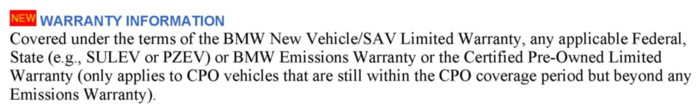
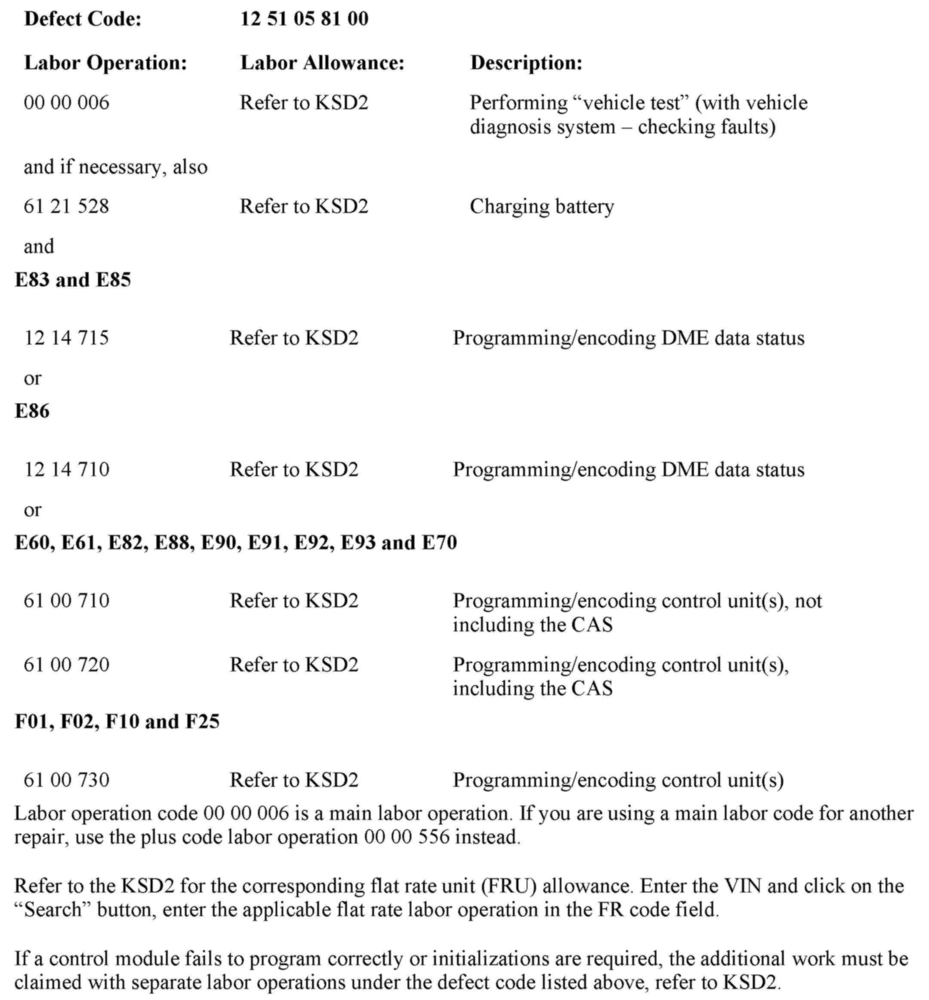

Computer/Controls - MIL ON And DTC's 2F99, 10B008 Stored
SI B12 13 11Engine Electrical Systems
March 2012
Technical Service
This Service Information bulletin supersedes SI B12 13 11 dated June 2011.
[NEW] designates changes to this revision
SUBJECT
DME Fault Entry: Ambient Temperature Sensor, Plausibility
MODEL
E60, E61, E85, E86, E90, E91 with the N52 engine (DME MSV70)
Produced from February 2005 until August 2008
E82, E88, E90, E92, E93 with the N51engine (MSV80.1)
Produced from August 2006 until December 2010
E60, E70, E82, E83, E88, E90, E91, E92, E93 with the N52K engine (DME MSV80)
Produced from June 2006 until December 2010
F10, F25 with the N52T engine (DME MSV90)
Produced from May 2010 until March 2011
E60, E61, E82, E88, E90, E92, E93 with the N54 and N54T engines (DME MSD80, MSD81)
Produced from June 2006 until March 2011
F01, F02 with the N54 engine (DME MSD87)
Produced from March 2010 until March 2011
SITUATION
The Service Engine Soon (MIL) lamp is on with either of the following DME faults stored:
^ E-Series: 2F99 - ambient temperature sensor, plausibility
^ F-Series: 10B008 - ambient temperature sensor, plausibility: signal implausible
The fault could occur if the vehicle is exposed to high temperature fluctuations.
For example:
The vehicle is parked for several hours in a heated garage. The engine is started and then driven outside of the garage during the cold time of year.
CAUSE
DME diagnostic software
CORRECTION
If the fault is stored, proceed as follows based upon the DMEs current software or vehicle integration level.
[NEW] Note: When the ISTA system message displays:
[NEW] Battery voltage only "XX.XX" V. Please connect charger.
[NEW] Please note the displayed battery voltage reading in the repair order comments section.
E85, E86 with the N52 engine (DME MSV70)
Program the DME with ISTA/P 2.40.0 or a more recent version.
E83 with the N52K engine (DME MSV80)
Program the DME with ISTA/P 2.40.0 or a more recent version.
E70 with the N52K engine (DME MSV80)
Program the vehicle with ISTA/P 2.40.0 to integration level E070-10-12-501 or a more recent version.
E60, E61 with the N52 engine (DME MSV70)
Program the vehicle with ISTA/P 2.40.0 to integration level E060-10-12-500 or a more recent version.
E60 with the N52K engine (DME MSV80)
Program the vehicle with ISTA/P 2.40.0 to integration level E060-10-12-500 or a more recent version.
E60, E61 with the N54 engine (DME MSD80)
Produced from February 2007 until February 2008
Program the vehicle with ISTA/P 2.40.0 to integration level E060-10-12-500 or a more recent version.
E60, E61 with the N54 engine (DME MSD81)
Produced from February 2008 until March 2010
Program the vehicle with ISTA/P 2.40.0 to integration level E060-10-12-500 or a more recent version.
E90, E91 with the N52 engine (DME MSV70)
Program the vehicle with ISTA/P 2.40.0 to integration level E89X-10-12-501 or a more recent version.
E82, E88, E90, E92, E93 with the N51engine (MSV80.1)
Program the vehicle with ISTA/P 2.40.0 to integration level E89X-10-12-501 or a more recent version.
E82, E88, E90, E91, E92, E93 with the N52K engine (DME MSV80)
Program the vehicle with ISTA/P 2.40.0 to integration level E89X-10-12-501 or a more recent version.
E82, E90, E92, E93 with the N54 engine (DME MSD80)
Produced from June 2006 until February 2008
Program the vehicle with ISTA/P 2.40.0 to integration level E89X-10-12-501 or a more recent version.
E82, E88, E90, E92, E93 with the N54 and N54T engines (DME MSD81)
Produced from February 2008 until March 2011
Program the vehicle with ISTA/P 2.41.0 to integration level E89X-11-03-501 or a more recent version.
F10 with the N52T engine (DME MSV90)
Program the vehicle with ISTA/P 2.41.0 to integration level F010-11-03-502 or a more recent version.
F25 with the N52T engine (DME MSV90)
Program the vehicle with ISTA/P 2.41.0 to integration level F025-11-03-502 or a more recent version.
F01, F02 with the N54 engine (DME MSD87):
Program the vehicle with ISTA/P 2.41.0 to integration level F001-11-03-502 or a more recent version.
If the fault were to occur on a vehicle already at the specified integration level or higher, perform diagnosis using the most current version of ISTA/D.
Note:
E89 with N52K, N54 or N54T engines are not affected.
E71 with the N54 engine is also not affected.
Note that ISTA/P will automatically reprogram and code all programmable control modules that do not have the latest software.
For information on programming and coding with ISTA/P, refer to CenterNet / Aftersales Portal / Service / Workshop Technology / Vehicle Programming.


[NEW] WARRANTY INFORMATION